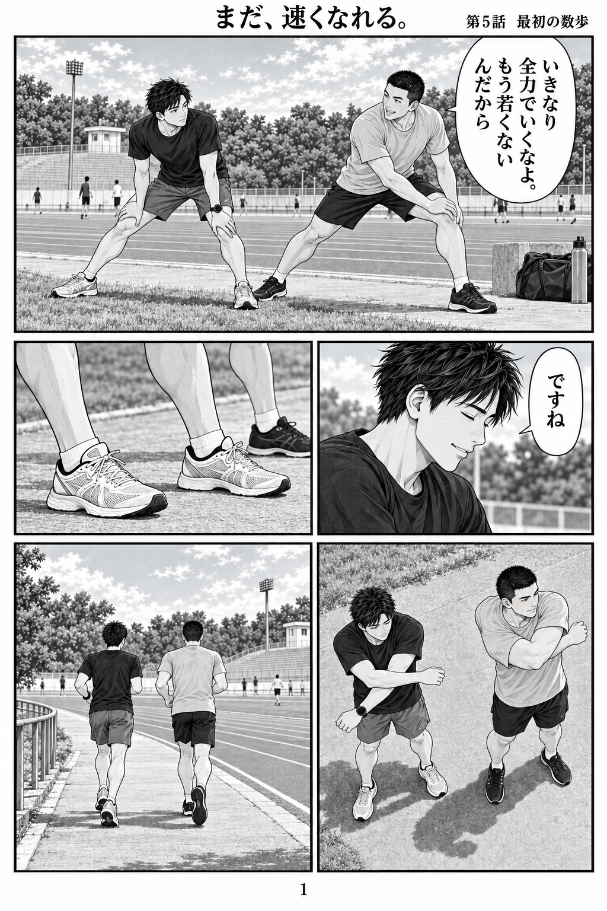

社会人 × 100m
まだ、
速くなれる。
毎日は、だいたい同じだった。
あの速さを、目の前で見るまでは。
30代。仕事も生活も、それなりに回っている。
退屈していた会社員・高瀬直人が、100mの世界へ踏み出す。
公開中のエピソード 全5話・40ページ

第1話 · 8ページ
自分は何秒だ？
観客席で芽生えた、小さな疑問。
まずは、自分のタイムが知りたい。
第2話 · 8ページ
走れる場所
いつもの公園で、ダッシュしてみる。
自分の足で踏み出す、初めての練習。
第3話 · 8ページ
12秒82
「最近なんか元気そうですね」
新しい一足で、もう一度スタートへ。
第4話 · 8ページ
11秒05
「次はいける」と思っていた、あの夏。
先輩の記録に残る、10秒台への思い。

第5話 · 8ページ
最初の数歩
初めて一緒に走る日。
最初の数歩に、先輩が驚く。